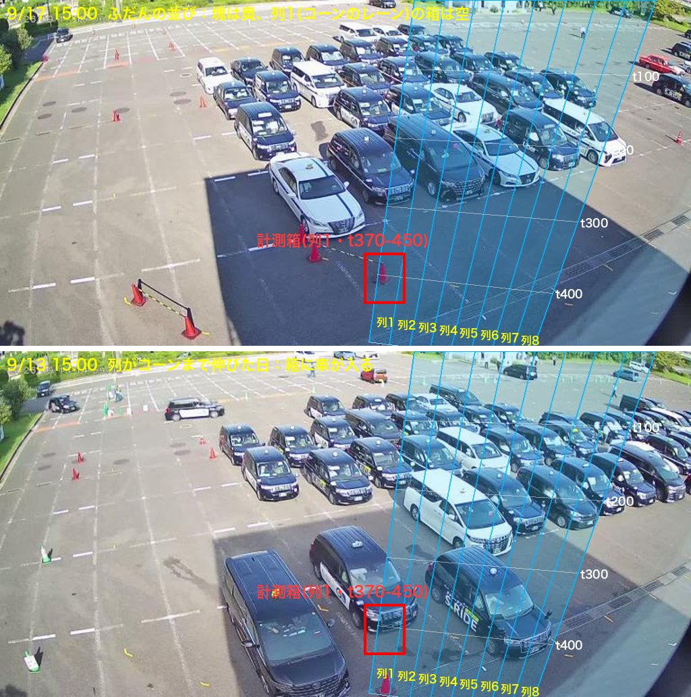
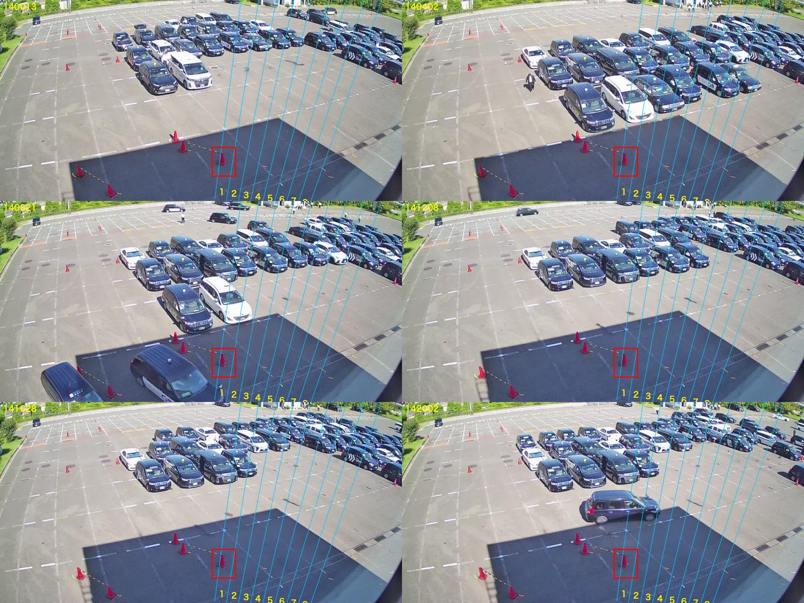
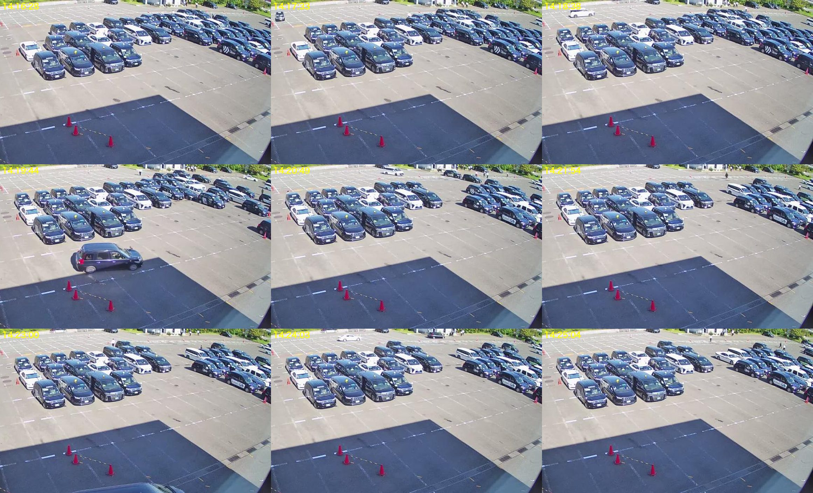
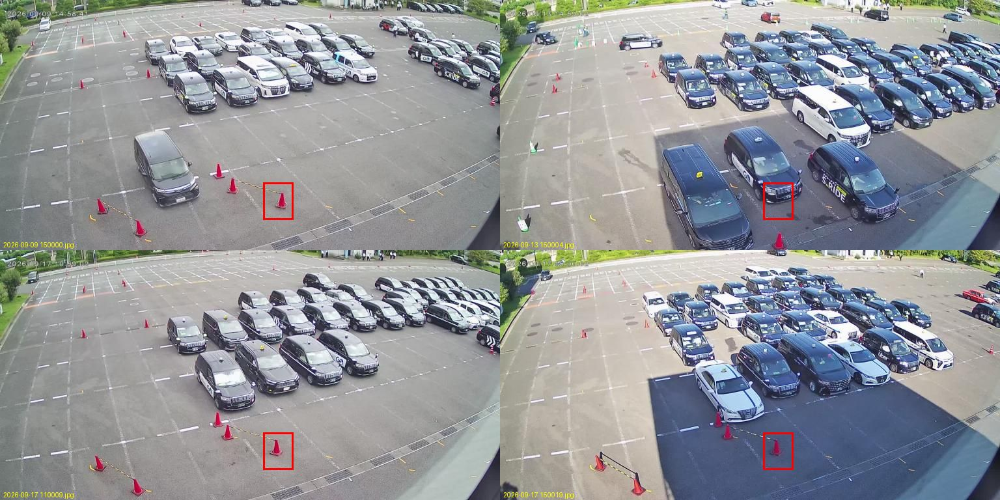

4号の列移動 — 私の認識（2026-09-18）
あなたが決めた定義と、Mac mini の画像で私が追った結果。合っていない所を指摘してください。
① 定義（記録から。ここは変えない）
- 列移動＝横スライド。列1・2が空いたら残りの塊が横に2列（1列のことも）スライド。前進ではない。
- 1回の数え方＝「前方列が出る(fall) → 6分以内に埋まる(rise)」の対。入庫だけの rise は数えない。
- 4号は奥カメラ(real002)の後列で測る（6/05 あなたの指示）。後列＝起点コーンから右へ8レーン幅。計測箱＝起点コーンのレーン、奥行き t370-450（8/21 確定）。
② 設定を画像に重ねると

青＝設定上の4号後列（起点コーンから右へ8レーン、列1〜8）。赤＝計測箱（列1・t370-450）。上：9/17 15時。下：9/13 15時（列がコーンまで伸びた日）。
見えること：ふだん、塊は箱より奥（画面の上）に座っていて、箱の位置まで来ない。9/13 のように長い日だけ箱に車が入る。昼の時間帯で箱に車がいるのは 1〜2割（明るさの分布から）。
③ 20分の流れ（14:00→14:20、4分おき）

塊の前縁（カメラに近い側）は t150〜200 あたりで、箱（t370-450）には届かない。
④ 1分おきで追う（14:16→14:25）

私に見えたこと：
- 14:19:44 に 1台が塊の前縁・左寄りから出て、左下（出口側）へ走っていく。
- 出た後、前縁の並びはほぼそのまま（4台）。塊全体が横に動いた（横スライド）とは、この10分では見分けられなかった。
- 塊の形が変わるのは主に 奥（右上）からの入庫。
ここが私の未解決点：この画像で「列1」がどの列で、横スライドがどう見えるのかを、まだ自分で特定できていません。設定の8レーン線（青）と、実際に車が並んでいる列の向きが合っているようにも見えないので、レーンの向き（消失点）自体を疑っています。
⑤ 日ごとの箱の状態

| 日 | 3号 列移動(記録) | 4号 列移動(記録) |
|---|---|---|
| 9/9〜9/16 | 24〜40 /日 | 6〜23 /日 |
| 9/17 | 18 | 3 |
4号は本来いちばん動きが多い乗り場（8/27監査：旧カメラ期 63回/日）。
⑥ 次に私がやること（あなたの承認なしで動かさない）
- まずレーンの向きを画像から取り直す（車の並びの向き＝列方向を、昼の複数フレームで測る）。
- そのうえで 1日分の画像を通しで追い、「列1が空く→塊が横にずれる」が実際にどこで起きているかを画像で示す。
- それが分かってから、箱の置き場所を提案する（数を増やす目的では動かさない）。